goji no chaimu
Goji No Chaimu, Sailing to Chichijima, Ogasawara, Japan.
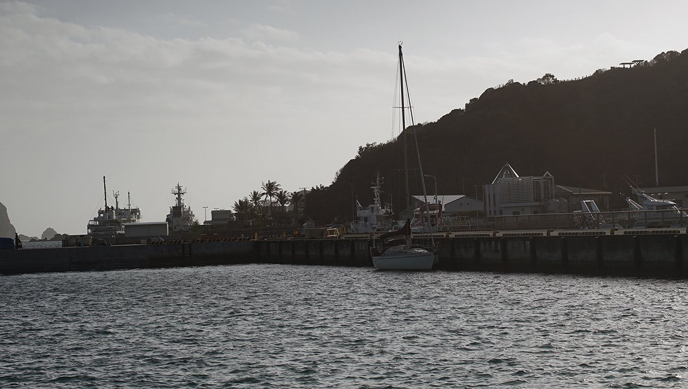19.02.26
Chichijima, Ogasawara Islands, Japan
After a long 21-day passage, seeing the shape of the island of Chichijima in the distance was unreal. This was our prize, our first step onto Japanese soil. We used to make many trips to Japan by plane, but getting there by our own efforts—by sailboat—is a lot slower, and harder. If we had stuck to our original plan of sailing there via Hawaii, we would have been there sooner, but we're glad we took the long route. Passing through 9 countries taught us a lot about the world.
During that time, we often talked about what it would be like to arrive in Japan, about what would happen when we did. You have to remember that this was a big deal for us, a milestone in our lives, the culmination of 3 years of hard work, a fantasy made real. A part of us couldn’t believe we’d made it, anytime now we’d wake up mid-ocean, still in transit somewhere far away in the South Pacific. Even when we’d have our feet planted on the ground, with a Japanese flag flying above our heads, we knew we’d be anxious, waiting for something horrible to happen that would rob us of our victory.
They’ll turn us away. We’ve landed on the wrong island. We died in the Pacific some months ago, and this is limbo.
Our eyes, accustomed to seeing nothing but ocean, were set on that phantasmic island ahead. The sun fell out of the sky, drawing down a star-studded curtain, the wind blew itself out, leaving the sea to settle into an unmoving dark mass. Limbo.
A bright circle appeared on the horizon. The moonrise, or the bright eye of some large mythological beast.
We would enter Futami port at night, but at least we had the moon to light the way. The island in the distance stopped being a vague black patch, we began to see details in it.
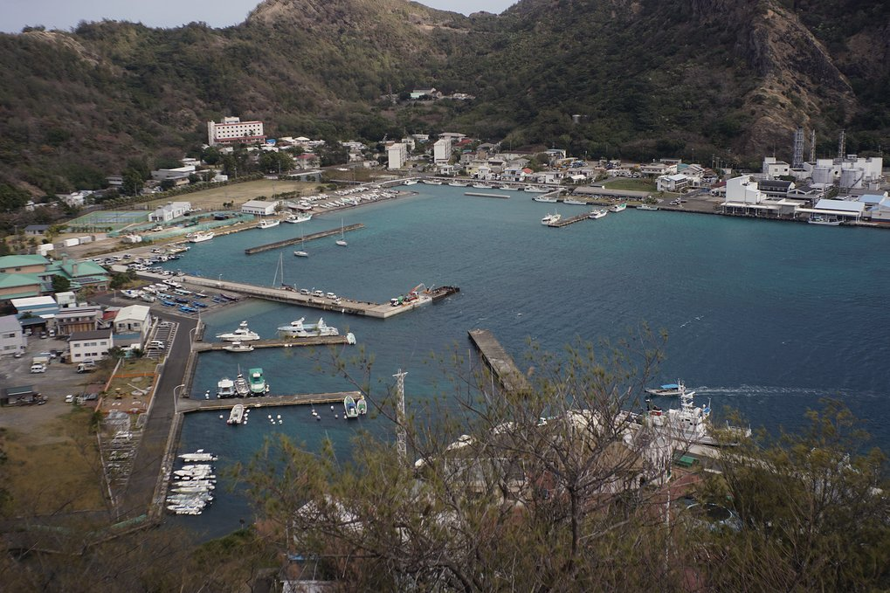As Pino passed the first set of buoys, lights and the shape of buildings came out of the darkness. Rek stood at the bow with a flashlight to illuminate any coming threats, the goal was to also warn others of our arrival because at this point our red and green nav lights weren't cooperating. Pino bucked hard on this trip, the bow diving deep, salt water must of entered the housing and corroded the wiring.
The famous ferry, Ogasawara Maru, sat idly at the dock. The giant was sleeping, we glided past it in silence, undetected. We pushed into the main fishing harbor, as promised, all was clearly marked and visible in the night. Our docking space was unoccupied, but there was one problem... the wall we had to moor onto stood a lot higher than we could jump. Rek stared, wide-eyed, docking line in hand.
"I don't think I can make that." Rek said.
“Sure you can!” Devine replied, with blind confidence.
Pino was approaching the dock slowly. Rek wondered if lassoing the bollards was an option. "Maybe if I stand on the pulpit, or swing off a halyard… hell, maybe I could will myself to grow wings."
“There’s a ladder!” Devine said.
Rek's jumping skills would go untested.
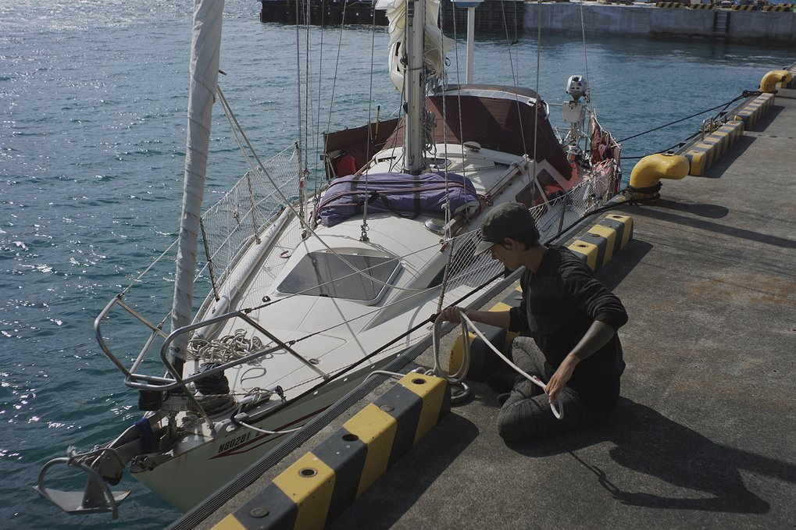We secured Pino to the pier. During this precarious operation no one fell into the water, or smashed a knee into a winch, even our toes suffered no damage—a rarity aboard Pino. We’ve harmed our toes so often that they’ve threatened to atrophy.
A coast guard official was there to greet us, telling us we had to stay onboard.
We apologized, climbing back on Pino island. The official told us that they would clear us in tomorrow morning at 0830—perfect. It was 2100 then, we would have time to relax and to clean up our mess of a home. We put a movie on, ate popcorn, then went to bed. We slept very well that night, as we tend to do after a long passage. Our brains longed for more than 3 consecutive hours of sleep.
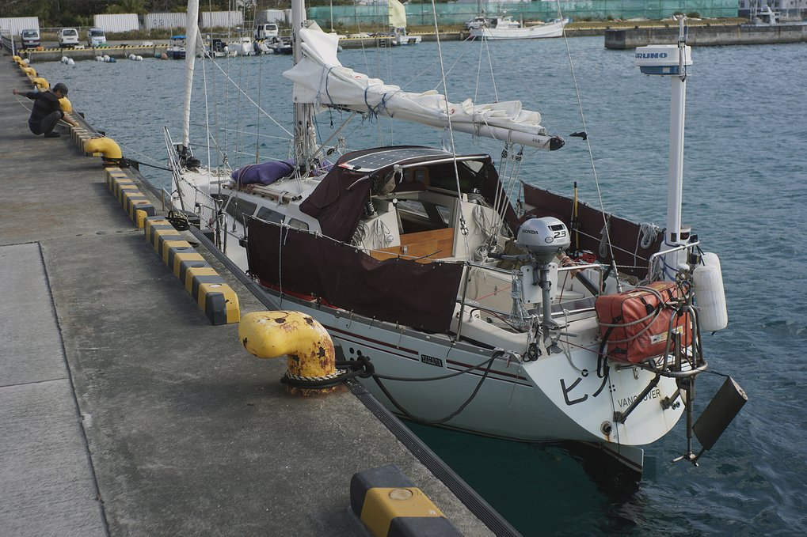The next morning, the officials stood on the dock, ready to push papers at us. There was about 5 or 6 officials, we feared everyone would try to come aboard at once, but instead they boarded us in pairs, taking turns.
Quarantine asked if we had any plants, we said we didn't, showing them the last bit of fresh food we had aboard: a dry and wrinkly knob of ginger. We signed our names many times, while using our very best Japanese. We could understand most of what they said, but the official papers had many kanji, the thought of trying to translate it all made us hot in the head. We wouldn't have to, many of the documents were translated to English and the ones that weren't were permits who's content were already familiar to us.Customs came aboard next, asking us for the purpose of our visit. Our reply was simple: "Tabemono"(food). He smiled at this.
For immigration, they accompanied us to their office in town. At the office they had the same devices present in airports to check you in, the ones that take your photo and that scan your index fingers. We filled a type of card usually given out on planes, except that instead of the flight number we wrote Pino. This amused us. Welcome to Japan airship Pino!
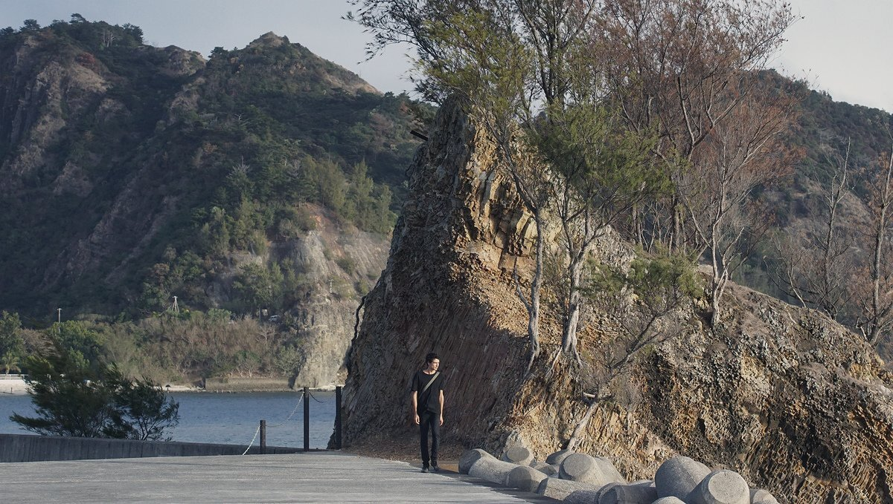When we stepped into a Japanese konbini(convenience store), it’s then that we started to get excited. When we first sampled karashi(hot mustard), or drank a cold yebisu(beer), everything around us became less translucent, we had eaten the food of that world and like Chihiro we lost our human scent and became creatures of Chichijima. This place wasn’t some cruel hallucination—it was real!
We soon picked up our old habits, making food the way we used to in Tokyo, eating the same snacks. It felt like we’d returned to a state of normality, like we’d never left and that the whole sailboat thing was a dream. A quick look around dispelled that reverie.
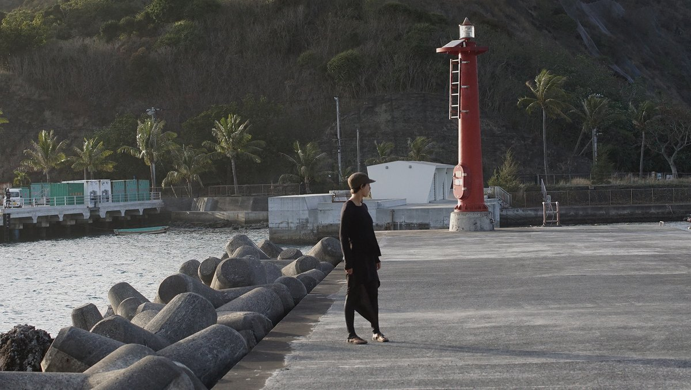Chichijima isn’t a big place, unlike Tokyo here the clock runs slow. There is no real rush to do anything. Stores close at regular hours, at 1700 konbinis and groceries are shut—a healthy way to live. There are only 2,500 people on this island, and most live in Omura, Okumura, Kiyose and Miyanohama. There are other towns further away, to the south east of the bay: Sakaiura, Ougiura, Komagari and Kominato.
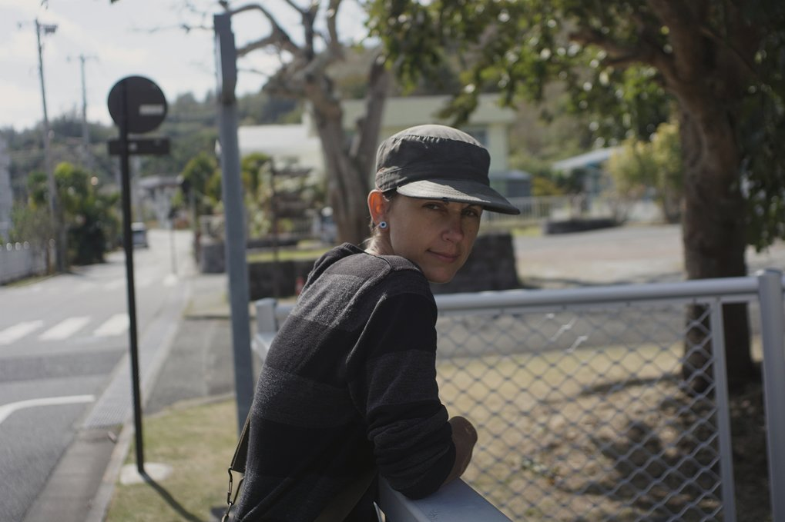There are few stores and businesses. For locals, it can get expensive to live in Chichijima, the rent is high and not much is sold on the island.
There is no plane service here, either, if people want to visit, or if they want to order goods(clothes, furniture, electronics, etc) from mainland Japan, it needs to come by ship (via Ogasawara Maru). The arrival of the ferry–which comes every 2 to 3 days–is a big deal for the town, not just because it means they’re getting their packages, but also because there is fresh food and that it brings tourists to the island. On the day the ship arrives, boxes of fresh food are piled up high in front of the grocery stores, and employees are busy placing them on the shelves while the local people are filling their baskets. Two days after the stores are replenished, there are fewer items available, the locals have raided the produce section and robbed it of all color.
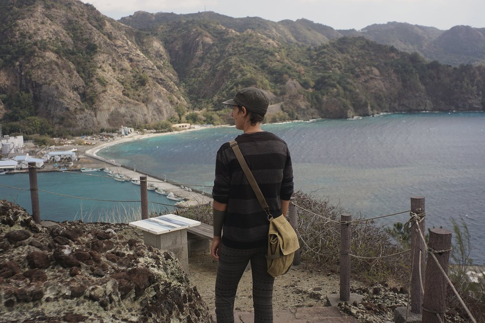The people of Chichijima rely heavily on tourism for money—the locals give dive tours, walking tours, operate restaurants or souvenir shops. All business depends on the visitors. Because we stayed here for 3 weeks, we saw the ship coming and going many times. We noticed that some shops would close the day before, and after the ship leaves. The town and Ogasawara Maru share a schedule. If you don’t know it, it can be confusing, but at least it’s easy to know if the ship is here or not, because it is a behemoth, you can see it from away. If the ship is in town the streets are full of people with windbreakers and bucket hats.
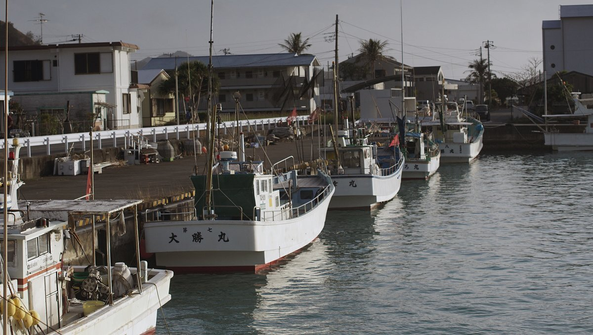When the ship leaves, the town makes a show of it, locals gather at the pier, waving, while others bang on taiko drums. When the ship sails out, dive and tour boats escort it to the entrance to the harbor, the people on it waving and yelling "Itterasshai!"(See you later.) We were witness to these elaborate festivities once. We stood at the pier as Ogasawara Maru left, waving, as if we too lived here. The people here value visitors, they want to give them a memorable send-off.
We met many locals while on the island. Having a yacht is a conversation starter. Many people would come by, see our boat and say hello, asking where we’re from and why we have Japanese writing on our boat.
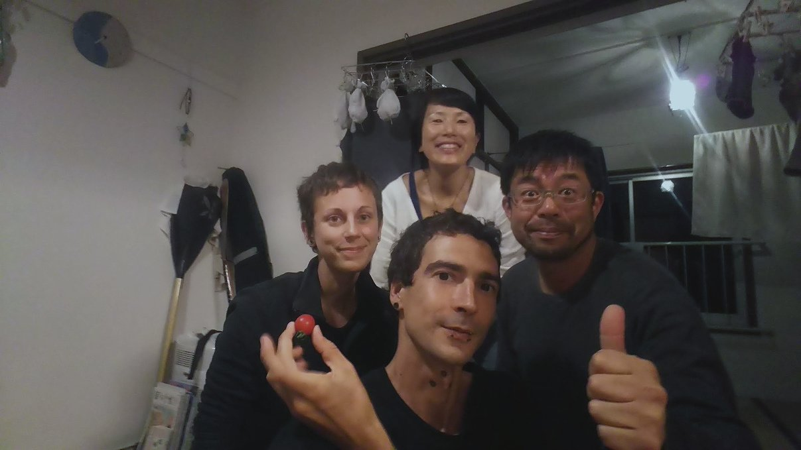Talking to locals, we learned a lot about Chichijima. Many residents have multiple jobs. We met one person who was in charge of servicing and replenishing vending machines on the island, his other job was to load and unload supplies from the ferry. Another person, our dear friend Bariton, repaired bicycles, volunteered at a garden, and worked at the town’s visitor center(where we first met him). The visitor center had really good Wifi, and indoor space where we could sit and charge our laptops. We spoke to Bariton once to ask him if he knew where we could do our laundy. "Sumimasen, doko de sentaku dekimasu ka?"(literally: Excuse me, where washing can do?). This short conversation led to a longer one, and eventually he graciously invited us into his home. We met his partner Chie. That night we shared stories, had a tasting of their homemade miso. On another occasion, they invited us over for dinner and served vegetable tempura and homemade sweet azuki (red beans) with yakimochi(grilled rice cakes). I think the reason they served us this was because Bariton came on the boat once, and saw an empty can of tsubuan from the store. Tsubuan is cooked, pureed, and sweetened azuki beans. Bariton, like a concerned parent, knew that the store bought version of this traditional desert had too much added sugar.
The dessert Chie made was amazing. Its canned equivalent pales in comparison. The taste was subtle, with just the right amount of sugar. March 3rd was Hinamatsuri (girl's day), Bariton showed up that morning with a plate of sakura mochi: pink rice cakes wrapped in a pickled shiso leaf, and stuffed with sweet red beans. Another local came by too, with two little dolls (雛人形 'hina-ningyou'), to make sure we could take part in the festivities that day (we still have them in 2024). That was so nice of them.
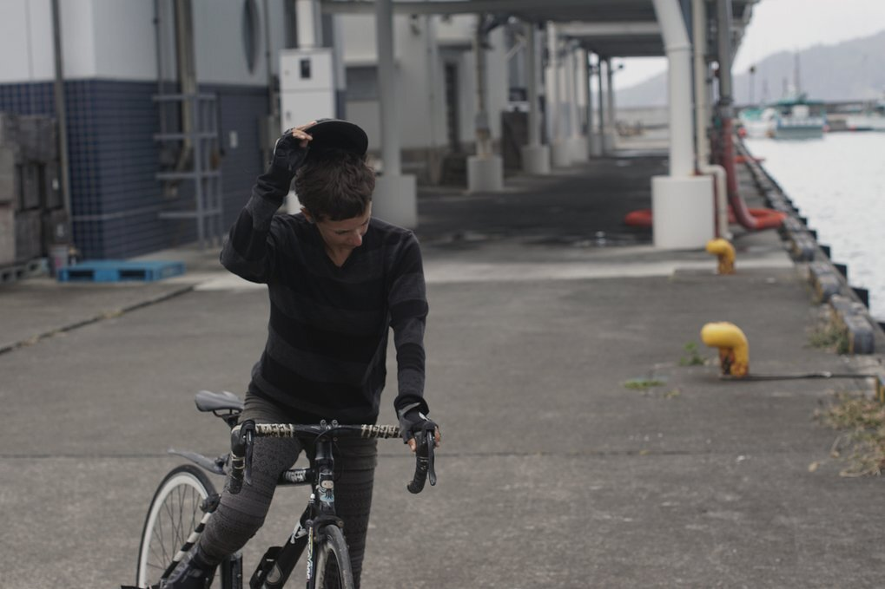Before we arrived, we were looking forward to being in a place where we could cycle again, to have a foot on land. When at anchor, bringing our bikes ashore with the dinghy is difficult, and sometimes it's not worth it because the roads aren't great for bikes(either because of the state of the roads or because of the amount of cars). But here, in Japan, the streets are immaculate. Biking in Chichijima was especially great because there aren’t many cars here, the ferry can’t accommodate them and so the roads are not very busy. We went for many joyrides, exploring the island on two wheels. Ah, how we missed this! This place is very mountainous, so we had to walk our bikes often, but after 3 weeks of inactivity at sea our atrophied flesh much enjoyed the exercise. Every hilltop offered a scenery worthy of being painted, with dramatic cliffs, clear waters and colorful reefs.
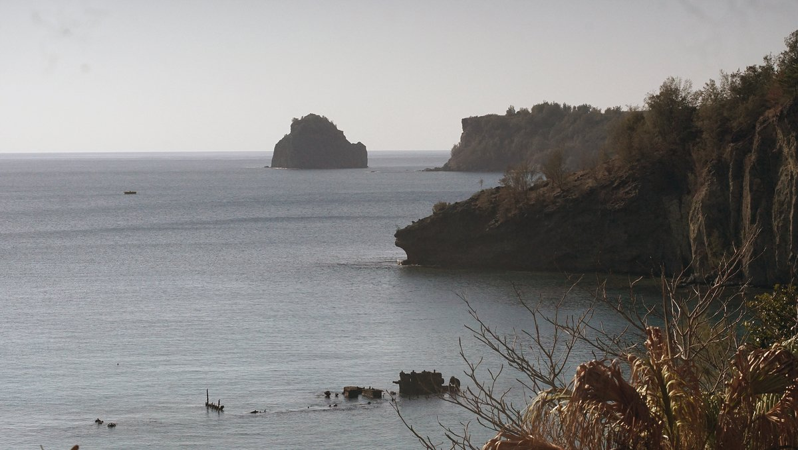“Are we really in Japan?” We’d ask ourselves. Our previous experience of Japan was so different. We lived by the water, but it didn’t have a crystalline quality, not like this. Walking by the pier and peering into the water, we’d see moorish idols pecking at the barnacles on the sea wall, sharing the buffet with other species of colorful fish. One night, we even spotted a 1.8 m (6 ft) sand tiger shark swimming in the shallows by the pier, crossing paths with the biggest sting ray we’d ever seen.
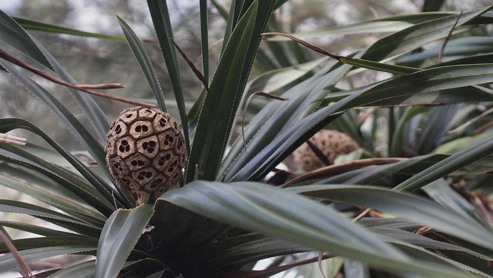Even amongst the trees, we’d see animals, like families of wild noyagi(goats) munching on greenery, or green anoles hiding under leaves of matching color.
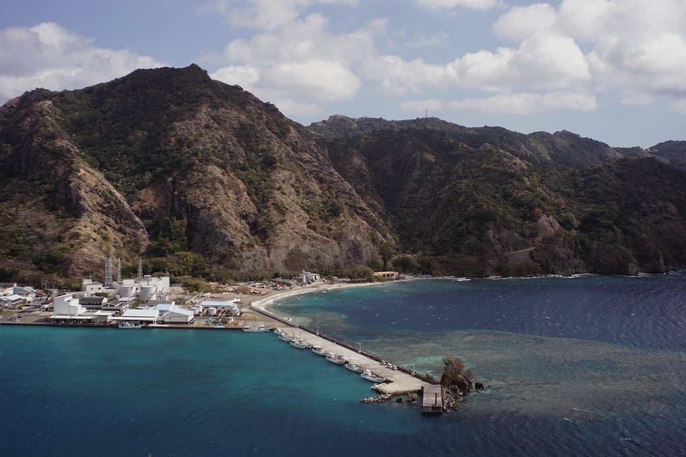We always imagined that during our first week here, we’d spend all of our money eating out, but that’s not what we did, like the locals, we too raided the groceries. We bought nagaimo (a type of yam), aonori (algae type), maitake (mushroom), renkon (lotus root), karashi (mustard), myoga (Japanese ginger, pictured below), soba (buckwheat noodles), shiso ume (perilla leaf pickled plums)… our lockers were filled with Japanese goods. Everything we ate was sweet and fresh, very different from the bland and near-rotted imported produce available in the Marshall Islands(the local-grown produce was great, but anything brought by ships, like tomatoes and cabbage, was terrible).
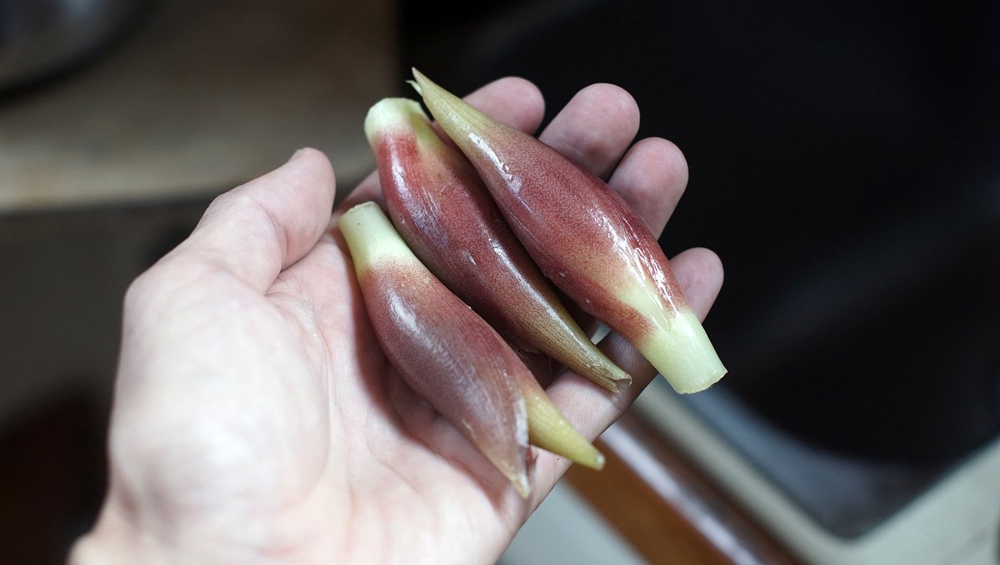We nearly lost it when we had a first taste of local, summer cabbage—we know what you’re thinking, cabbage? Yes. It is a humble ingredient, it’s something we rely on a lot on passage and that we’ve eaten often in the past, but it always served more as a filler in meals and was never the highlight of the plate. The cabbage we bought that day was fresh, wet and crisp, as if we’d just picked it out of the garden of a skilled farmer, juices flowing from its stem still. We'd eat the leaves as a snack, alongside a miso dip, and savored every bite.
We also had some tomatoes harvested in Hahajima, an island just south of Chichijima. These tomatoes, we were told, are very expensive. Bariton offered us a few of these lovely red jewels, a fruit so sweet that it defied all logic.
I forgot that vegetables, and fruit could taste this good. Here in Chichijima, every ingredient was a precious and delicate note, each playing its part in the meal to create a synchronous whole.
Our first week here we made every Japanese dish we could think of, like homemade okonomiyaki, tororo soba, agedashi tofu, konnyaku sashimi, karashi renkon… we also bought some umeshu, and drank plenty of Yebisu beer.
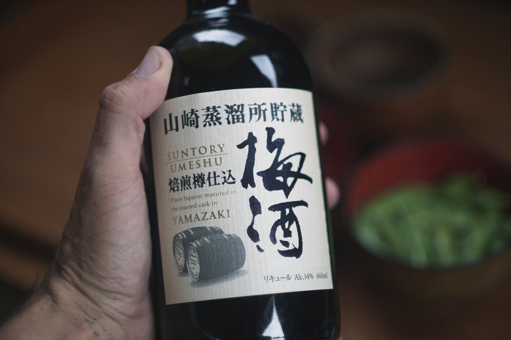It really was an ideal place.
We like to try and imagine what it would be like to live here. In truth, we do that everywhere we go, but here takes the crown. We can bike, the food is good, we can walk in the forest, there are many trees, the water is near… and also, here, we’ve got internet and plenty of opportunities to talk in Japanese.
This is no dream.
We will never grow tired of hearing the goji no chaimu, or the five o’clock bell, a sound that is common for the Japanese but that has a special meaning for us. The first time we heard it here in Chichijima, a lump formed in our throats. We’d forgotten all about this detail about living in Japan.
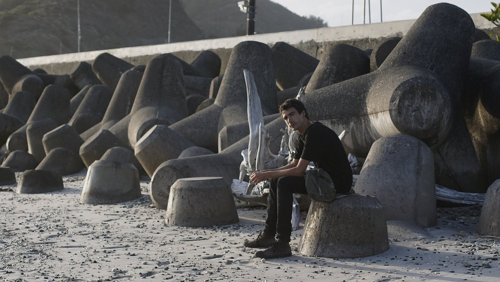The song is soothing and sweet, and when it rings you know you’re in Japan.
Other related content:
- Sailing in Japan
- Ogasawara cruising guide
- Sailing to Ogasawara(Video, YouTube)
- Provisioning in Japan
- Plantbased diet in Japan
After Ogasawara, we sailed to Shimizu, see Hello fujisan for more details.